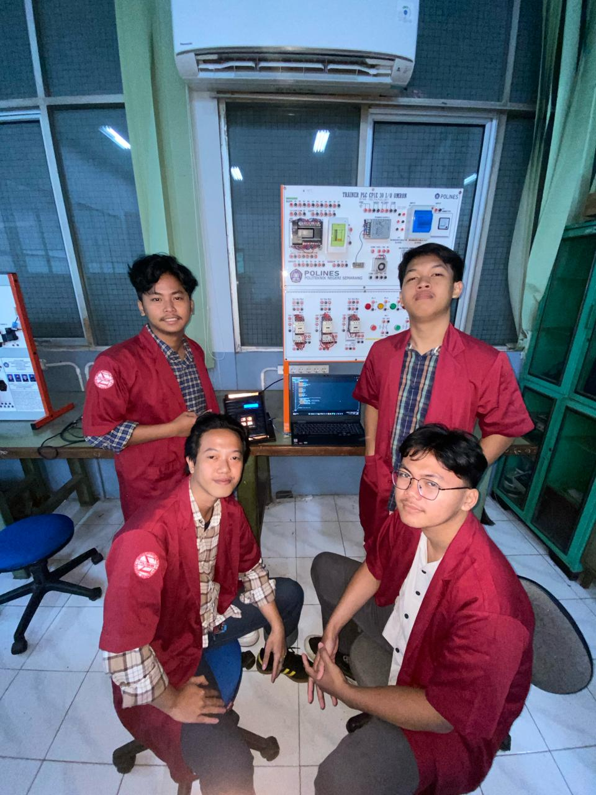

Mohamad Luthfi Armansyah
ELECTRONIC ENGINEERING
ELECTRONIC ENGINEERING
| Year | Educational Institution | Major / Program | Academic Details |
|---|---|---|---|
| 2023 - 2026 |
 Semarang State Polytechnic
Semarang State Polytechnic
|
Diploma III in Electronics Engineering | GPA: 3.50 / 4.00 Relevant Coursework: Industrial Automation, Instrumentation Systems, PLC Programming, Microcontroller Systems, Sensors and Transducers, and Internet of Things (IoT). |
| 2020 - 2023 |
 SMA Negeri 2 Cilacap
SMA Negeri 2 Cilacap
|
Science Major (IPA) | Graduated |
 PT PLN Indonesia Power (UBP Adipala) | Jan 2026
PT PLN Indonesia Power (UBP Adipala) | Jan 2026
PT PLN Indonesia Power UBP Central Java 2 Adipala is a power generation unit under PT PLN Indonesia Power that operates a coal-fired steam power plant to support reliable electricity supply for the Java–Bali system.
 PT Solusi Bangun Indonesia Tbk. Cilacap Plant | Oct 2025 - Dec 2025
PT Solusi Bangun Indonesia Tbk. Cilacap Plant | Oct 2025 - Dec 2025
PT Solusi Bangun Indonesia Tbk is one of Indonesia’s leading cement producers, manufacturing cement, clinker, and ready-mix concrete to support national infrastructure and construction development.

An IoT-based Smart Donation Box developed using an ESP32 microcontroller and TCS3200 color sensor to automatically identify and record donation amounts. The system transmits donation data in real-time through wireless connectivity and provides instant notifications via Telegram, enabling transparent, efficient, and remote monitoring of charity collection activities.

Designed and developed an autonomous Line Follower Robot based on the ESP32 microcontroller and infrared sensor array. The robot was programmed to detect and follow a predefined path by processing sensor data in real-time and controlling DC motors accordingly. This project strengthened my skills in embedded systems, sensor integration, motor control, and autonomous robotic system development.

Developed an Arduino Uno-based automatic temperature control system using DHT11 sensors, LCD display, and heating elements to maintain safe shelter temperatures through real-time monitoring and automated control.